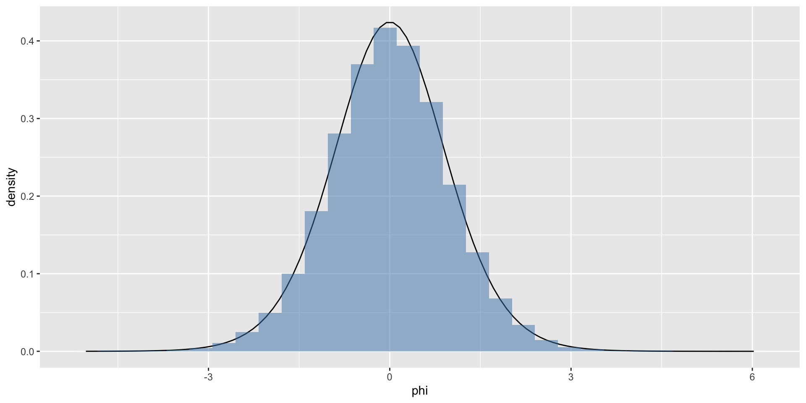

Exponential families & variable transformation
STA602 at Duke University
Practice exercises
Ex 1: exponential family
Let \(p(y|\theta) = \theta^{y}(1-\theta)^{1-y}\)
- Identify the transform \(\phi = f(\theta)\) such that \(p(y | \phi)\) can be written as \(h(y) c(\phi) e^{\phi t(y)}\). Identify the sufficient statistic \(t(y)\), as well as \(c(\phi)\).
- Write down the conjugate prior \(p(\phi|n_0, t_0)\).
Ex 2: variable transform
Confirm that \(f(\theta)\) from the previous exercise is monotonic and invertible. Next, using the one-line formula: \(p_\theta(\theta) = p_{\phi}(f(\theta))|\frac{d\phi}{d\theta}|\), show that the prior, \(p(\theta | n_0, t_0)\) is a beta density.
To verify the above numerically, sample from \(p(\theta | n_0, t_0)\) using the code below, for some \(n_0, t_0\) of your choosing.
theta = rbeta(n = 10000, shape1 = n_0 * t_0, shape2 = n_0*(1-t_0)Next, transform each sample of the object theta to phi using \(f(\theta)\) as defined in exercise 1.
Finally, plot a density plot of samples phi and, on the same plot, add \(p(\phi | n_0, t_0)\) from exercise 1.
Ex 3: another variable transform
Let \(X \sim \text{Unif}(5, 10)\) and let \(Y = X^2\)
Notice that even though \(X^2\) is not a monotonic function everywhere, it is a monotonic function over the support of X.
Exercise: use the change of variables formula to derive \(p(y)\). Confirm via simulation, as in exercise 2.
Solutions
Ex 1: solution
a
\[ \phi = log(\frac{\theta}{1-\theta}) \]
Therefore,
\[ p(y|\phi) = e^{\phi y} \left(\frac{1}{1 + e^{\phi}} \right) \]
and
\[ \begin{aligned} t(y) &= y\\ c(\phi) &= \left(\frac{1}{1 + e^{\phi}} \right) \end{aligned} \]
b
\[ p(\phi | n_0, t_0) \propto \left({1 + e^{\phi}} \right)^{-n_0} e^{n_0 t_0 \phi} \]
Ex 2: solution
Monotonic if \(\theta_1 \geq \theta_2\) implies \(f(\theta_1) \geq f(\theta_2)\) over the support \(\theta_1, \theta_2 \in [0,1]\).
Let \(\theta_1 > \theta_2\), let’s check:
\[ \begin{aligned} \log \left(\frac{\theta_1}{1-\theta_1}\right) &> \log \left(\frac{\theta_2}{1-\theta_2}\right)\\ \theta_1 (1-\theta_2) &> \theta_2(1-\theta_1)\\ \theta_1 > \theta_2 \end{aligned} \]
It is monotonic!
Furthermore, we found it was invertible in ex 1: \(\theta = e^{\phi}/(1 + e^{\phi})\).
One-line formula: \(p_\theta(\theta) = p_{\phi}(f(\theta))|\frac{d\phi}{d\theta}|\):
\[ \begin{aligned} p(\theta) &\propto (1-\theta)^{n_0} (\theta/(1-\theta))^{n_0 t_0} \left|\frac{d\phi}{d\theta} \right|\\ &= \theta^{n_0 t_0 -1} (1-\theta)^{n_0(1 -t_0) - 1} \end{aligned} \]
So \(\theta \sim \text{beta}(n_0 t_0, n_0(1-t_0))\).
Remember that \(a\) and \(b\) of a beta distribution must both be positive! This constrains what \(n_0\) and \(t_0\) can be.
Ex 2: solution (pt 2)
n_0 = 5
t_0 = .5
theta = rbeta(n = 100000, shape1 = n_0 * t_0, shape2 = n_0 * (1 - t_0))
phi = log((theta / (1-theta)))
df = data.frame(phi)
fphi = function(phi, n_0, t_0) {
( (1 + exp(phi))^(-n_0) ) * exp(n_0 * t_0 * phi) /
beta(n_0 * t_0, n_0 * (1 - t_0))
}
df %>%
ggplot(aes(x = phi)) +
stat_function(fun = fphi, args = list(n_0 = n_0, t_0 = t_0)) +
geom_histogram(aes(x = phi, y = ..density..),
fill = 'steelblue', alpha = 0.5)The normalizing constant can be obtained by transforming from \(p(\theta)\) (which is beta) back to \(p(\phi)\).
Ex 3: solution

x = runif(100000, 5, 10)
y = x^2
df = data.frame(y)
f = function(y) {
return(.1/sqrt(y))
}
df %>%
ggplot(aes(x = y)) +
stat_function(fun = f) +
geom_histogram(aes(x = y, y = ..density..),
fill = 'steelblue', alpha = 0.5)